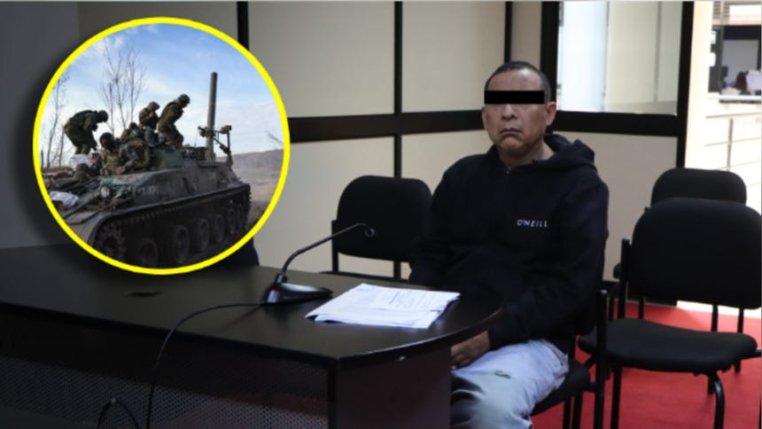
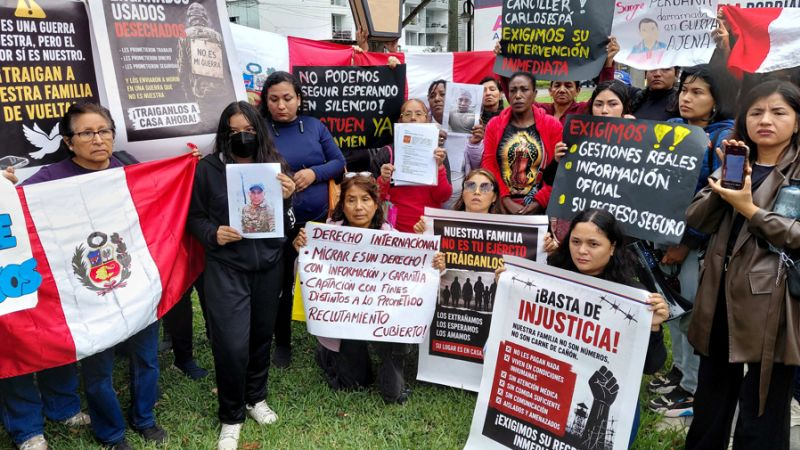

Lima, 14 de agosto de 2026 — El Ministerio de Relaciones Exteriores de Perú confirmó este viernes, en un informe oficial sin precedentes, que al menos once ciudadanos peruanos han perdido la vida en el frente de batalla de Ucrania mientras combatían integrando las filas del ejército ruso. La misma fuente reporta que 114 compatriotas permanecen en calidad de desaparecidos en medio del conflicto que ya se extiende por más de cuatro años.
El canciller Héctor Béjar, en una conferencia de prensa realizada a primera hora de la mañana en el Palacio de Torre Tagle, detalló que las cifras fueron recopiladas a través de los consulados peruanos en Moscú, San Petersburgo y las ciudades ucranianas de Donetsk y Lugansk, donde se ha registrado la mayor concentración de ciudadanos peruanos enrolados en las fuerzas rusas.
"Estos números nos duelen profundamente como nación. Cada uno de estos compatriotas partió con la esperanza de encontrar un futuro mejor, y hoy sus familias enfrentan la peor de las incertidumbres", declaró el canciller, visiblemente afectado. "Hemos activado todos los protocolos de asistencia consular y estamos en comunicación permanente con las autoridades rusas para esclarecer el paradero de los desaparecidos y facilitar la repatriación de los cuerpos de los fallecidos".
El fenómeno de los mercenarios peruanos en Ucrania
El conflicto entre Rusia y Ucrania, que se recrudeció en febrero de 2022 con la invasión rusa a gran escala, ha atraído a miles de combatientes extranjeros de todo el mundo. Entre ellos, un número significativo de ciudadanos peruanos —en su mayoría jóvenes de entre 22 y 40 años— han sido reclutados tanto por el ejército ruso como por las fuerzas ucranianas, atraídos por promesas de pago, beneficios migratorios o, en algunos casos, por ideologías políticas afines al Kremlin.
Según fuentes del Ministerio de Defensa peruano, entre enero de 2024 y agosto de 2026, se estima que al menos 300 peruanos han viajado a la zona de conflicto con la intención de incorporarse a las filas rusas, aunque la cifra real podría ser mayor, ya que muchos lo hicieron de manera irregular a través de rutas turísticas hacia Turquía o los países bálticos.
El embajador de Perú en Moscú, Jorge Valdez, señaló en declaraciones a este diario que "la Cancillería ha mantenido un diálogo constante con el Ministerio de Defensa ruso para obtener información detallada sobre los peruanos que han sido identificados en el frente. Sin embargo, la dinámica del campo de batalla y la dispersión de las tropas dificultan enormemente la localización precisa de cada individuo".


El drama de las familias: "Solo quiero saber si mi hijo está vivo"
Mientras las autoridades presentaban su informe, a las afueras del Palacio de Torre Tagle se vivía una escena desgarradora. Decenas de familiares de los desaparecidos se congregaron desde las primeras horas de la mañana, portando carteles con los rostros de sus seres queridos y exigiendo al gobierno peruano acciones concretas.
María Elena Quispe, madre de Juan Carlos Quispe Mamani, de 28 años, quien viajó a Rusia en junio de 2025 con la promesa de un trabajo en la construcción y luego fue reclutado por el ejército ruso, rompió en llanto al hablar con este medio. "Hace ocho meses que no sé nada de mi hijo. La última vez que hablamos me dijo que estaba en una zona peligrosa, que quería volver a casa. Ahora me entero por la televisión que hay 114 desaparecidos y mi corazón se parte en mil pedazos. Solo quiero saber si está vivo".
La Asociación de Familiares de Peruanos en Conflicto (AFAPEC), que agrupa a más de 80 familias afectadas, ha presentado una carta formal al Congreso de la República solicitando la creación de una comisión especial que investigue el reclutamiento de peruanos por parte de fuerzas extranjeras y que gestione la repatriación de los compatriotas que se encuentran en zona de guerra.
El rol de los "reclutadores" y las redes de tráfico de personas
En las últimas semanas, diversas investigaciones periodísticas han destapado la existencia de redes de captación de peruanos en situación de vulnerabilidad económica, que son engañados con ofertas de empleo en Europa y terminan siendo enviados al frente de batalla. Estas mafias operan principalmente en las regiones de Lima, Arequipa, Cusco y Loreto, ofreciendo sumas que oscilan entre los 3,000 y 5,000 dólares por persona reclutada.
El fiscal de la Nación, Juan Carlos Villena, anunció este jueves la apertura de una investigación preliminar contra estas organizaciones por los presuntos delitos de trata de personas, reclutamiento ilegal y estafa. "Estamos ante un fenómeno criminal que ha aprovechado la desesperación de cientos de peruanos para lucrar con sus vidas. No permitiremos que estos delitos queden impunes", afirmó el fiscal en una entrevista con RPP Noticias.
Cifras clave del informe de la Cancillería peruana
- 11 ciudadanos peruanos fallecidos en combate en Ucrania (confirmados)
- 114 peruanos en calidad de desaparecidos en zona de conflicto
- 22 compatriotas repatriados en lo que va del año (9 heridos, 13 ilesos)
- 80+ familias afiliadas a AFAPEC que exigen información
- 300 peruanos estimados que viajaron a Ucrania para unirse al ejército ruso desde 2024
Reacciones en el ámbito político y diplomático
El informe de la Cancillería ha generado una ola de reacciones en el espectro político peruano. La presidenta del Congreso, Patricia Chirinos, anunció la conformación de una comisión multipartidaria que viajará a Moscú en las próximas semanas para entrevistarse con autoridades rusas y ucranianas, con el objetivo de agilizar los procesos de identificación y repatriación.
"No podemos permanecer indiferentes ante esta tragedia. Son peruanos que han perdido la vida o que están desaparecidos, y sus familias merecen respuestas claras. Vamos a exigir al gobierno ruso que entregue toda la información que tenga sobre nuestros compatriotas", declaró Chirinos en una conferencia de prensa en el Hemiciclo del Congreso.
Por su parte, la bancada de izquierda, a través del vocero Waldemar Cerrón, cuestionó la decisión del gobierno de no emitir una alerta migratoria preventiva que desincentivara a los peruanos a viajar a zonas de conflicto. "El Estado peruano tiene la responsabilidad de proteger a sus ciudadanos, no solo una vez que están en problemas, sino también antes de que partan. Debemos implementar campañas de prevención y advertencia claras", sostuvo Cerrón.
En el plano internacional, la Organización de Estados Americanos (OEA) emitió un comunicado expresando su "profunda preocupación" por la situación de los ciudadanos peruanos en Ucrania y ofreciendo su apoyo técnico para la identificación de los desaparecidos. El secretario general de la OEA, Luis Almagro, manifestó que "la comunidad interamericana debe unirse para proteger a sus ciudadanos en el extranjero, especialmente en situaciones de conflicto armado".
El costo humano del conflicto: más de 2,500 latinoamericanos en el frente
El caso peruano no es aislado en la región. Según reportes de la Oficina del Alto Comisionado de las Naciones Unidas para los Derechos Humanos (ACNUDH), al menos 2,500 ciudadanos de países latinoamericanos han viajado a Ucrania para unirse a las fuerzas rusas o ucranianas desde el inicio de la invasión. Entre ellos, destacan ciudadanos de Colombia, Ecuador, Bolivia, México y Brasil, además de Perú.
El pasado mes de junio, el gobierno de Colombia confirmó la muerte de siete de sus ciudadanos en combate, mientras que Ecuador reportó al menos cuatro fallecidos y una decena de desaparecidos. La Cancillería peruana ha coordinado con estos países para intercambiar información y establecer mecanismos conjuntos de asistencia consular en la región del conflicto.
El analista internacional Juan Manuel Rodríguez, profesor de la Pontificia Universidad Católica del Perú, señaló que "la presencia de combatientes latinoamericanos en Ucrania es un reflejo de la desesperación económica y la falta de oportunidades en nuestra región. Muchos de estos jóvenes vieron en el conflicto una vía de escape a su situación de pobreza, pero se encontraron con una realidad mucho más cruda: la muerte o el olvido".
Próximos pasos: repatriación y protocolos de identificación forense
La Cancillería peruana informó que se está coordinando con el Comité Internacional de la Cruz Roja (CICR) y el Sistema de las Naciones Unidas para establecer un protocolo de identificación forense de los cuerpos de los once peruanos fallecidos. Este proceso, que puede tomar varias semanas debido a la situación de guerra y la dificultad de acceso a las zonas de combate, busca garantizar la correcta identificación de cada víctima y el posterior traslado de sus restos a Perú.
"Sabemos que el dolor de las familias es inmenso, y estamos haciendo todo lo que está a nuestro alcance para acelerar estos trámites. La dignidad de nuestros compatriotas fallecidos es nuestra prioridad", aseguró el viceministro de Relaciones Exteriores, Ignacio Higueras, en una entrevista con Canal N.
En cuanto a los 114 desaparecidos, la Cancillería ha habilitado una línea telefónica de atención gratuita (0800-1-3127) y un correo electrónico (consulado.ucrania@rree.gob.pe) para que los familiares puedan reportar información y recibir asistencia psicológica y legal. Además, se ha dispuesto un equipo de psicólogos y trabajadores sociales en la sede de Torre Tagle para brindar apoyo a las familias.
El Ministerio de Defensa, por su parte, ha activado el Plan de Asistencia al Ciudadano en el Extranjero (PLANACE), que contempla el despliegue de un equipo de oficiales de enlace a Polonia, Rumania y Moldavia para coordinar las operaciones de búsqueda y rescate de los peruanos desaparecidos.
Un llamado a la solidaridad internacional
El canciller Béjar concluyó su conferencia de prensa haciendo un llamado a la comunidad internacional para que se garantice el respeto al derecho internacional humanitario en el conflicto ucraniano. "Pedimos a todas las partes que respeten la vida de los civiles y de los combatientes que han sido reclutados. Exigimos que se nos permita acceder a las zonas donde se encuentran nuestros compatriotas para poder brindarles la asistencia que necesitan. El Perú no es parte de este conflicto, pero sus ciudadanos están sufriendo sus consecuencias", manifestó.
Mientras tanto, en las calles de Lima, las familias continúan su lucha. A esta hora, la Plaza San Martín se ha llenado de velas, fotografías y carteles con los nombres de los 114 desaparecidos. Entre ellos, el de Carlos Alberto Torres Flores, de 34 años, padre de dos hijos; el de Rosa María Huamán Paredes, de 26 años, una de las pocas mujeres peruanas enroladas en el frente; y el de Luis Fernando Quispe Cárdenas, de 23 años, quien soñaba con regresar a su pueblo natal de Ayacucho para construir una casa para su madre.
La incertidumbre y el dolor son palpables. Mientras el gobierno peruano promete acciones concretas, las horas pasan y los corazones de las familias esperan una noticia que, en muchos casos, podría ser la peor de todas. Pero mientras haya un desaparecido, habrá una familia que no descansará hasta tener respuestas. El Perú entero observa, con la esperanza puesta en que el destino de sus compatriotas pueda ser esclarecido y que, al menos, la verdad les sea devuelta a quienes hoy viven en la angustia más profunda.